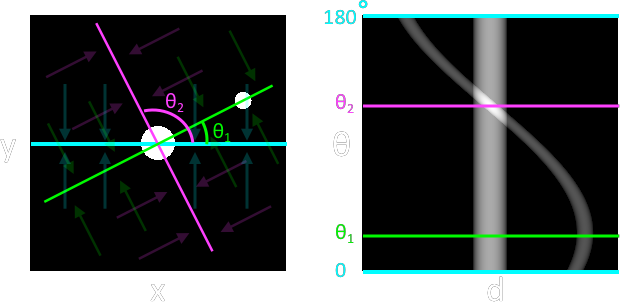

| Beam Quality |
Spectrum Shape depends on
1. target material
2. filtration 3. anode angle
↓θ , harder beam
better resolution
(according to IEC 61267)
|
||||||||||||||
| Sinogram |

|
||||||||||||||
| Image Reconstruction Algorithm |
Analytic Approach
Iterative Approach
|
||||||||||||||
| Imaging CNR / SNR |
SNR
\[ SNR = \frac{\mu}{\sigma} \]
μ = N \( \sigma = \sqrt{N} \) \( SNR = \sqrt{N} \) CNR
\[ CNR = \frac{|\mu_1 - \mu_2|}{\sigma_0} \]
|
| Entropy (H) | Entropy of a random variable X \[ H(X) = - \sum_{x\in X} P(x)logP(x) \] |
| Mutual Information |
For two discrete random variables, X and Y, \[ MI(X:Y) = H(X) + H(Y) - H(XY) \]
where
H = Shannon Entropy
In terms of probabilities, \[ MI(X, Y) = \sum_{y\in sY} \sum_{x\in X} p(x, y) log \frac{p(x, y)}{ f(x) g(y) } \]
where
p = joint probability distribution function of X and Y
f, g = marginal probability distribution function of X and Y respectively |